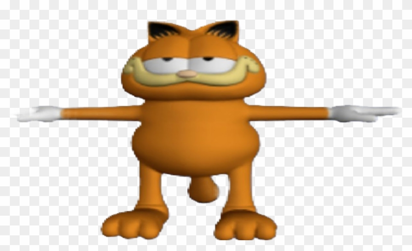
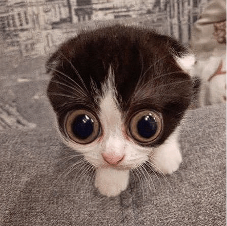
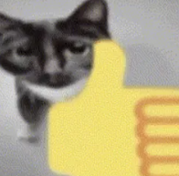
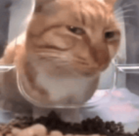
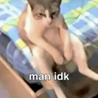

Your Ultimate Feline Resource Hub
Explore the purr-fect world of cats with CatWiki, your go-to destination for everything feline-related. From cat care tips to breed profiles, behavior insights, and adorable cat videos, embark on a journey through the fascinating realm of our beloved companions. Join our community of cat enthusiasts today!
Wawacat: ready to take on the digital world one stare-down at a time. Don't let the roundness fool you, he WILL beat you up.
MonkaW cat: where every glimpse becomes an adventure in the unknown!
OKCat: Officially the coolest cats on the block! 👍 Giving pawsitive vibes one thumbs-up at a time.
Mr Fresh: This breed of cats is nicknamed Mr. Fresh because they like to stare at cameras.
"man idk"
- 悲伤的猫
Call to action!
Join our cat cult by clicking on the JOIN button!